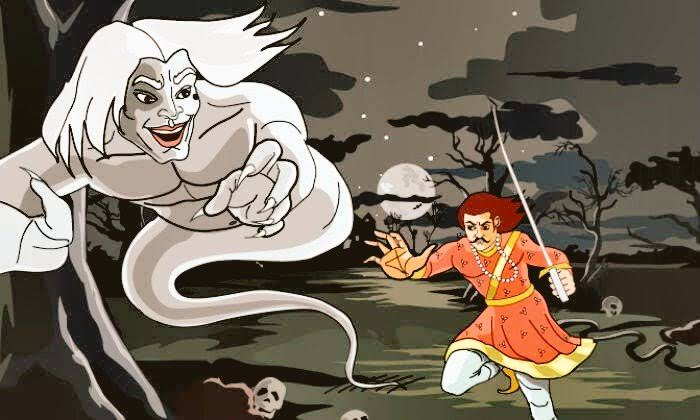

આ વખતે પણ રાજા વિક્રમાદિત્ય એક મોટા ઝાડ પરથી લટકતા સોપારીના ઝાડને નીચે લાવ્યો અને તેની સાથે આગળ વધવા લાગ્યો.
પોતાને બચાવવા માટે બેતાલે ફરીથી રાજાને એક વાર્તા કહી. બેતાલ કહે છે...

એક સમયે કનકપુર નામનું એક શહેર હતું, જેના રાજાનું નામ યશોધન હતું. તે રાજા તેની પ્રજાની ખૂબ કાળજી લેતો હતો.
આ જ શહેરમાં એક શેઠ પણ હતા, જેમની પુત્રીનું નામ ઉન્માદિની હતું. તે ખૂબ જ સુંદર અને પ્રતિભાશાળી હતી, જેણે પણ તેને જોયો તે તેને જોતો જ રહ્યો.
એક સમયે કનકપુર નામનું એક શહેર હતું, જેના રાજાનું નામ યશોધન હતું. તે રાજા તેની પ્રજાની ખૂબ કાળજી લેતો હતો.
આ જ શહેરમાં એક શેઠ પણ હતા, જેમની પુત્રીનું નામ ઉન્માદિની હતું. તે ખૂબ જ સુંદર અને પ્રતિભાશાળી હતી, જેણે પણ તેને જોયો તે તેને જોતો જ રહ્યો.
શેઠની વાર્તા સાંભળીને, રાજાએ બ્રાહ્મણોને તેની પુત્રીને જોવા અને તેના લક્ષણોની તપાસ કરવા મોકલ્યા.
રાજાની સલાહને અનુસરીને, બ્રાહ્મણો ઉન્માદિની જોવા માટે ત્યાં ગયા.બ્રાહ્મણો ઉન્માદિનીને જોઈને ખૂબ ખુશ થયા,
પરંતુ બીજી જ ક્ષણે તેઓને પણ ચિંતા થઈ કે જો રાજા આટલી સુંદર છોકરી સાથે લગ્ન કરશે તો તે આખો દિવસ તેને જોતો રહેશે અને પ્રજા તરફ ધ્યાન આપી શકશે નહીં.
તેથી, બ્રાહ્મણોએ ઉન્માદિનીના દેખાવ અને ગુણો વિશે રાજાને કંઈ ન કહેવાનું નક્કી કર્યું.
બધા બ્રાહ્મણો રાજા પાસે આવ્યા અને કહ્યું, "રાજા, તે છોકરી સારી નથી, તેથી તમારે તેની સાથે લગ્ન ન કરવા જોઈએ."
બ્રાહ્મણોની વાત સાંભળીને રાજાને લાગ્યું કે તેઓ સત્ય કહી રહ્યા છે. રાજા ઉન્માદિની સાથે લગ્ન કરવાનો ઇનકાર કરે છે.
પછી શેઠે રાજાની અનુમતિથી તેની પુત્રીના લગ્ન રાજાના સેનાપતિ બલધર સાથે કરાવ્યા. ઉન્માદિની લગ્ન પછી ખુશીથી જીવતી હતી,
પરંતુ ક્યારેક તેના મનમાં એવું પણ આવતું કે રાજાએ તેને ખરાબ સ્ત્રી માનીને તેની સાથે લગ્ન કરવાની ના પાડી દીધી.
એકવાર વસંતઋતુમાં રાજા વસંત મેળો જોવા માટે નીકળ્યા. ઉન્માદિનીને પણ રાજાની મુલાકાતના સમાચાર મળ્યા,
તે જોવા માંગતી હતી કે કોણ એવો રાજા છે જેણે તેની સાથે લગ્ન કર્યા નથી. આ વિચારીને ઉન્માદિની રાજાને જોવા માટે તેના ઘરની છત પર ઊભી રહી.
રાજા તેની આખી સેના સાથે ત્યાંથી જઈ રહ્યો હતો ત્યારે તેની નજર છત પર ઉભેલી ઉન્માદિની પર પડી. તેને જોઈને રાજા સંપૂર્ણ રીતે આકર્ષાઈ ગયો.
તેણે તેના નોકરને પૂછ્યું, "આ સુંદર છોકરી કોણ છે?" પછી સેવકે રાજાને આખી વાત કહી,
“આ એ જ છોકરી છે જેની સાથે તમે બ્રાહ્મણોના આગ્રહથી લગ્ન કરવાની ના પાડી હતી. બાદમાં તેના લગ્ન કમાન્ડર બલધર સાથે થયા હતા.
આખી વાત સાંભળીને રાજા ગુસ્સે થઈ ગયા અને બ્રાહ્મણોને શહેર છોડી દેવાનો આદેશ આપ્યો.
ત્યારપછી રાજાને આ વાત વારંવાર વિચારીને દુઃખ થવા લાગ્યું. તેને વારંવાર શરમ પણ આવતી હતી કે તે એક છોકરી વિશે વિચારી રહ્યો હતો જે પહેલેથી જ પરિણીત હતી.
આસપાસના લોકો રાજાના મનમાં શું છે તે તેના અભિવ્યક્તિઓ પરથી સમજવા લાગ્યા. રાજાના મંત્રીઓ અને પ્રશંસકોએ રાજાને કહ્યું, "રાજા, એમાં દુઃખી થવાનું શું છે,
સેનાપતિ તમારા માટે જ કામ કરે છે, તેથી તમારે તેની સાથે વાત કરવી જોઈએ અને તેની પત્નીને અપનાવવી જોઈએ." પણ રાજાએ મંત્રીઓની વાત ન સાંભળી.
રાજાનો સેનાપતિ બલધર, જેની સાથે ઉન્માદિનીનાં લગ્ન થયાં હતાં, તે રાજાનો ભક્ત હતો. જ્યારે તેને રાજાની વાતની જાણ થઈ ત્યારે તે રાજા પાસે ગયો અને કહ્યું,
"રાજા, હું તમારી દાસ છું અને તે તમારા ગુલામની પત્ની છે." હું તેને જાતે તમારી સમક્ષ રજૂ કરું છું. તું કાં તો તેને દત્તક લે અથવા હું તેને મંદિરમાં છોડી દઉં.
જો તે દેવકુલની સ્ત્રી બને તો તમે તેને દત્તક લઈ શકો છો. સેનાપતિની વાત સાંભળીને રાજા ખૂબ ગુસ્સે થયો. રાજાએ કહ્યું,
“રાજા તરીકે હું આવું ખરાબ કામ ક્યારેય નહીં કરું. મારા ભક્ત હોવાથી તમે મને એવું કામ કરવા માટે કહો છો.
જો તમે તમારી પત્નીનો સ્વીકાર નહીં કરો તો હું તમને ક્યારેય માફ નહીં કરીશ. મનમાં ઉન્માદિની વિશે વિચારતા રાજા મૃત્યુ પામ્યા.
રાજાના મૃત્યુથી સેનાપતિને ખૂબ જ દુઃખ થયું અને તે સહન ન કરી શક્યો. તેણે તેના ગુરુને બધું કહ્યું. તેના શિક્ષકે કહ્યું,
"રાજા માટે પોતાનો જીવ આપવો એ સેનાપતિની ફરજ છે." આ સાંભળીને સેનાપતિએ રાજા માટે બનાવેલ અંતિમ સંસ્કાર ચિતામાં કૂદીને પોતાનો જીવ આપ્યો.
જ્યારે સેનાપતિની પત્ની ઉન્માદિનીને આ વાતની જાણ થઈ તો તેણે પણ પોતાના પતિ માટે પોતાનો જીવ આપી દીધો.
આ બધું કહ્યા પછી બેતાલે રાજા વિક્રમાદિત્યને પ્રશ્ન પૂછ્યો, "હે રાજા, મને કહો કે રાજા અને સેનાપતિમાં સૌથી વધુ હિંમતવાન કોણ હતો?"
 વિક્રમાદિત્યએ કહ્યું, “રાજા સૌથી હિંમતવાન હતા કારણ કે તે રાજધર્મનું પાલન કરતો હતો.
સેનાપતિની સલાહથી પણ તેણે ઉન્માદિનીનો સ્વીકાર ન કર્યો અને પોતે મરવાનું યોગ્ય માન્યું. સેનાપતિ એક સારો સેવક હતો,
તેણે તેના રાજા માટે પોતાનો જીવ આપ્યો, તેમાં આઘાતજનક કંઈ નહોતું. ખરી હિંમત ધરાવતો રાજા એ હતો જેણે પોતાના ધર્મ અને કામની અવગણના ન કરી.”
વિક્રમાદિત્યએ કહ્યું, “રાજા સૌથી હિંમતવાન હતા કારણ કે તે રાજધર્મનું પાલન કરતો હતો.
સેનાપતિની સલાહથી પણ તેણે ઉન્માદિનીનો સ્વીકાર ન કર્યો અને પોતે મરવાનું યોગ્ય માન્યું. સેનાપતિ એક સારો સેવક હતો,
તેણે તેના રાજા માટે પોતાનો જીવ આપ્યો, તેમાં આઘાતજનક કંઈ નહોતું. ખરી હિંમત ધરાવતો રાજા એ હતો જેણે પોતાના ધર્મ અને કામની અવગણના ન કરી.”
વિક્રમાદિત્યનો જવાબ સાંભળીને બેતાલ ખુશ થયો અને દર વખતની જેમ તેણે ઝાડ પર જઈને ફાંસી લગાવી દીધી.
એક સાચો હિંમતવાન વ્યક્તિ તે છે જે પોતાના પહેલા તેના પરિવાર વિશે વિચારે છે અને તેના પ્રિયજનોની સંભાળ રાખે છે
સારાંશ :
વિક્રમાદિત્યનો જવાબ સાંભળીને બેતાલ ખુશ થયો અને દર વખતની જેમ તેણે ઝાડ પર જઈને ફાંસી લગાવી દીધી.